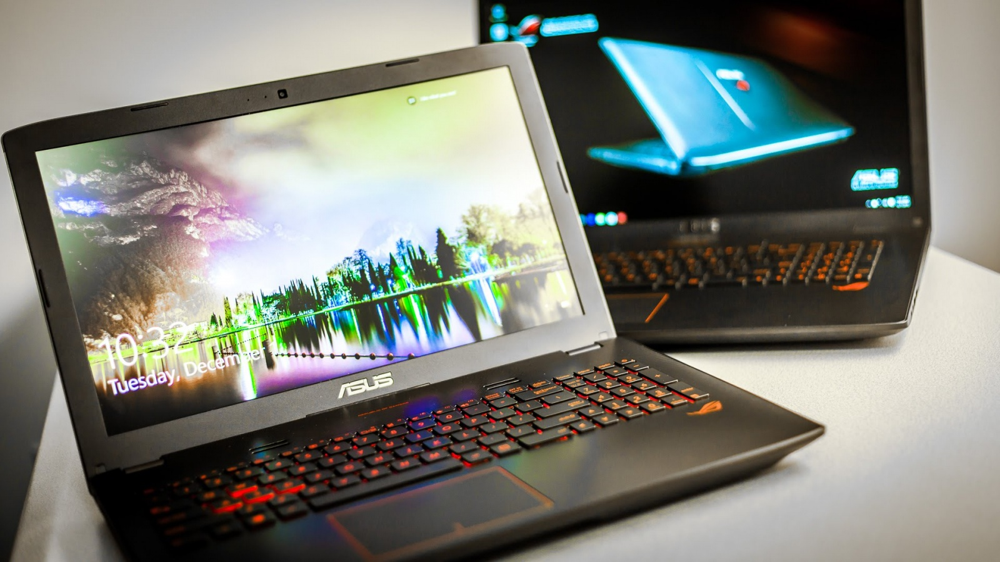

Ноутбук ASUS Laptop 11 E210MA-GJ185T
17000 ₽


Ноутбук ASUS Laptop 11 E210MA приятно порадует своего обладателя наличием 11.6-дюймового экрана на базе матрицы TN+film, гарантирующей высокую детализацию и контрастность каждой картинки. Благодаря матовому покрытию вы не столкнетесь с появлением искажений, спровоцированных солнечными бликами. Изображения транслируются в максимальном разрешении 1366х768 пикселей.